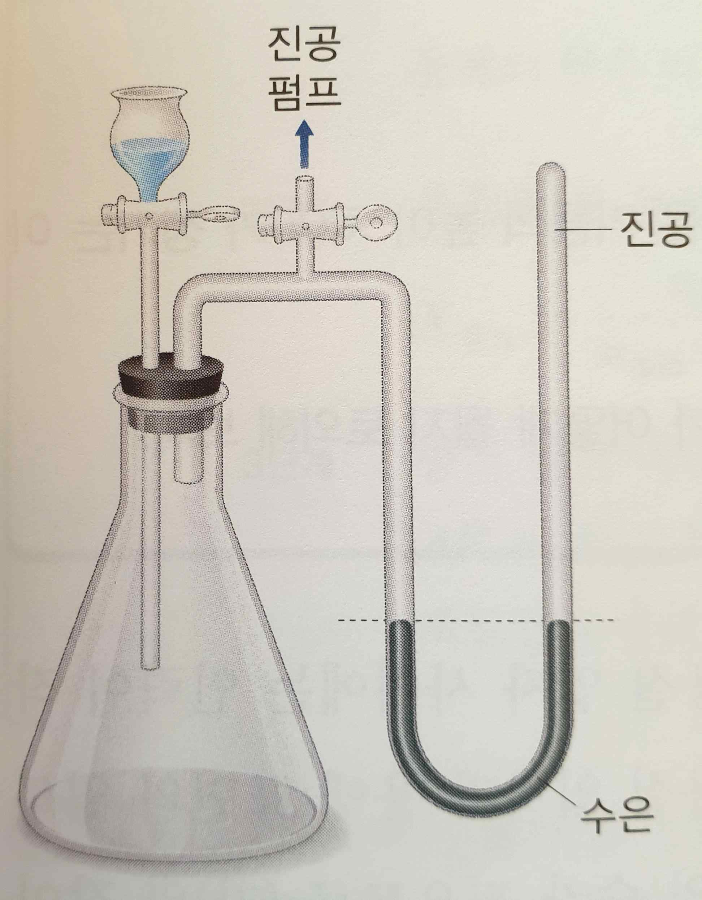
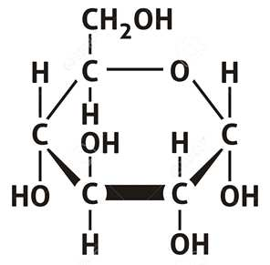

문제 1
아래 그림에서 진공 펌프를 이용해 삼각플라스크 내 공기를 모두 제거하여 수은 기둥의 높이 차이가 없도록 만들었다. 증류수 180 g을 플라스크 용기에 넣어 충분한 시간이 지났더니 수은 기둥의 높이 차이가 \(h_1\)이 되었다. 아래 모든 실험에서 플라스크 내 온도는 일정하게 유지되었을 때, 다음의 물음에 답하시오.

1-가
높이 차이가 없던 수은 기둥이 증류수를 넣은 후, 높이의 차이가 \(h_1\)이 되어 일정하게 유지되는 과정을 물질의 상(phase) 개념을 활용하여 명확히 설명하시오.
1-나
삼각플라스크 내의 물과 공기를 모두 제거하여 수은 기둥의 높이 차이가 없게 만든 뒤, 다시 증류수 360 g을 플라스크 용기에 넣고 충분한 시간이 지나게 했을 때, 수은 기둥의 높이 차이를 \(h_1\)을 이용해 나타내시오.
1-다
삼각플라스크 내부의 증류수를 모두 제거하고 다시 진공 상태로 만든 후, 증류수 180 g에 포도당 18 g을 녹인 수용액을 넣고 충분한 시간이 지나도록 하였다. 이 때 수은 기둥의 높이 차이를 \(h_1\)을 이용해 나타내고 높이의 차이가 발생한 이유를 설명하시오(아래 그림은 포도당의 분자 구조이고 물과 포도당의 분자량은 각각 18, 180이다).

1-라
포도당과 염화나트륨(NaCl, 소금)은 모두 결정성 고체이지만 그 분류는 다르다. 두 화합물을 각각 아래의 예와 같이 분류하고 결정을 형성하는 원리를 설명하시오.
(예: 다이아몬드는 탄소 원자 사이 공유 결합에 의해 결정을 형성한 공유 결정 화합물이다.)